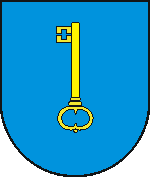
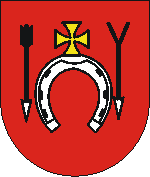
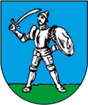
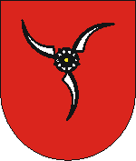
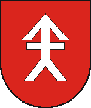
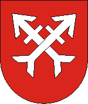
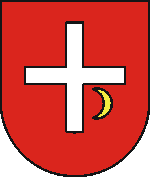
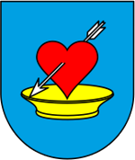
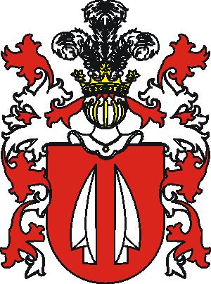

Larissa
LarissaFeliks Paweł Hilary
Domański
Domański
sędzia pokoju okr. siennickiego, wł. dóbr: Grzebowilk, Iłówiec, Kotuszów i Pilichowice

JasieńczykFranciszek Salezy W. R.
Karczewski
Karczewski
wł. dóbr Brzozowa, Gulin, Rożenek i Milczany


Maciej Brutus
Ładomirski
Ładomirski
oficjalista w Kozłowie k/Buska
dzierż. dóbr Taurów, Koniuszki i Kozłów
wł. dóbr Wierzchnia
dzierż. dóbr Taurów, Koniuszki i Kozłów
wł. dóbr Wierzchnia
(Filipkowce 1798 - )

RolaKarolina Weronika
Janicka
Janicka
wł. części dóbr Martynów i Hałuszczyńce


Maciej
Gołaszewski
Gołaszewski
radca sądów we Lwowie, Samborze, Tarnowie i Stanisławowie
wł. dóbr Honoratówka
wł. dóbr Honoratówka


Rafała Wiktoria
Malczewska
Malczewska
∞ ok. 1824
Edward Maxymilian
Domański
Domański
dzierż. dóbr Jarochy, Żytniów i folw. w Piotrkowie Tryb., urzędn. szp. św. Jana w Warszawie
Walenty Konstanty Brutus
Ładomirski
Ładomirski
dzierż. dóbr Babin i Suchrów, wł. dóbr Tomaszowce, Markowce i Dzieduszyce Małe
1898
∞

Stanisław Konstanty, Helena Aleksandra i Edward Zbigniew
z Domanina Domańscy